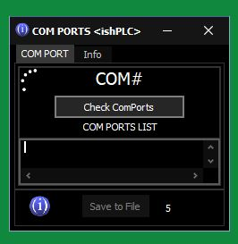
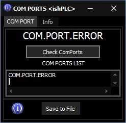
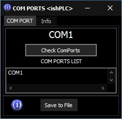
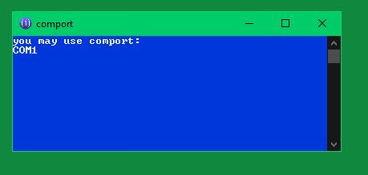

"COM Port check" V.7
How to use:
Just run the app. Automaticaly runs timer, after 10 seconds the app will check enabled COM Port for connection.
Or Press "Check Com Ports" Button.

Possible two variants:
1. Com Port Disabled
(This means: Something is wrong. You must check all connections again)
2. Com Port Enabled
(This means: everything is fine and you must use the specified port number for PC-PLC communication)
Or use small util.app "comport"
(Console app, size is 88 Kb.)
Video: how it works...
"COM Port check"
I.Shaturny ishPLC © 2021

ishplcprog@gmail.com